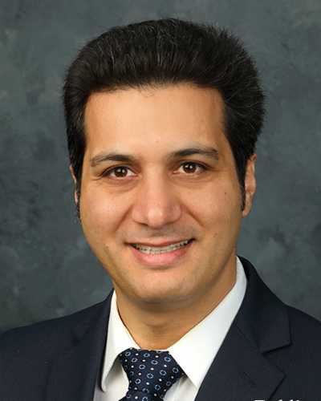
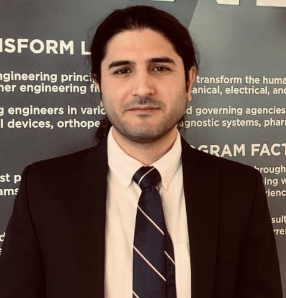
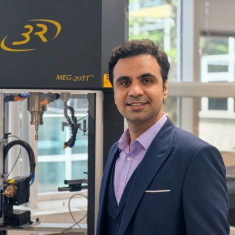
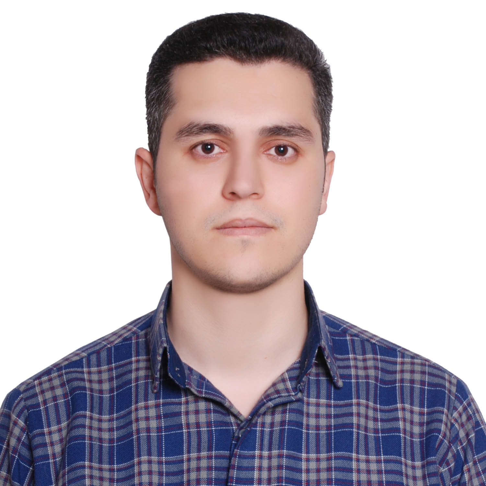
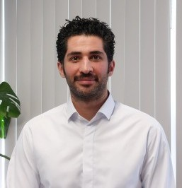
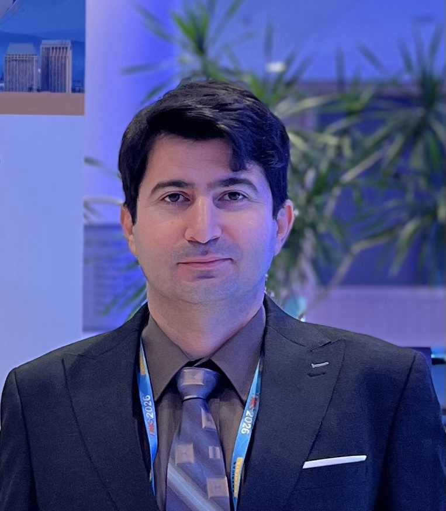
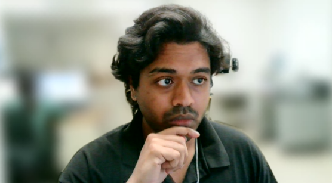
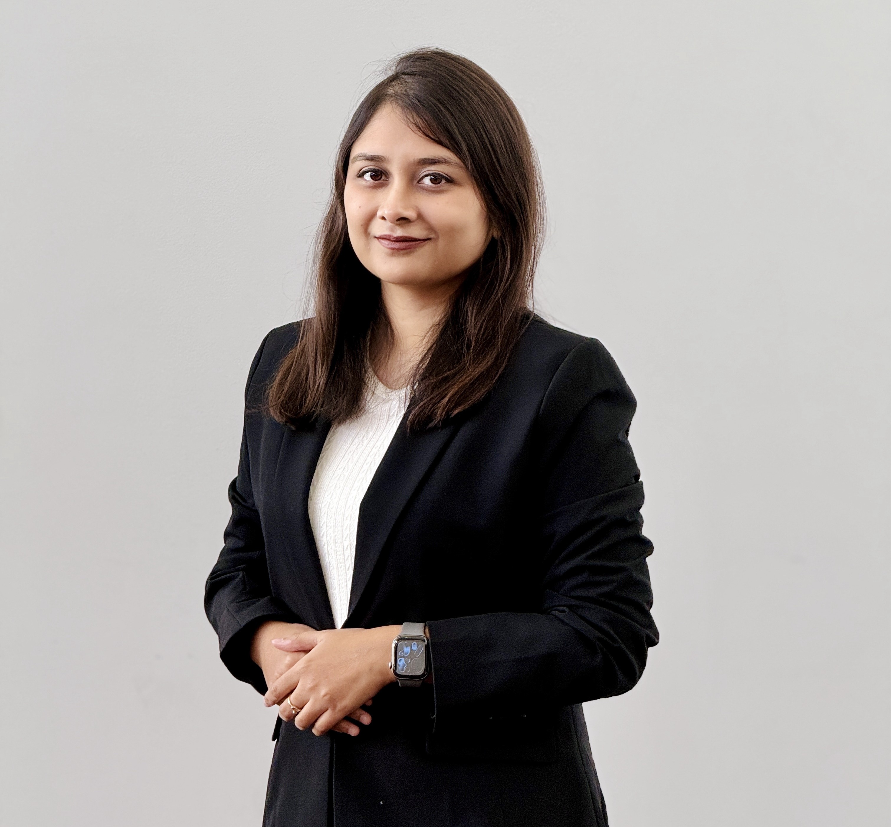

Principal Investigator

Dr. Meysam Haghshenas
Associate Professor, MIME Department
Dr. Meysam Haghshenas is an Associate Professor in Mechanical Engineering at the University of Toledo. Prior to joining UToledo in June 2019, he served as an Assistant Professor at the University of North Dakota, conducted postdoctoral research at the University of Waterloo in Canada, and worked as a Process Engineer with Linamar Corporation.
His research focuses on the mechanical behavior and processing of engineering materials, with particular emphasis on fatigue and fracture mechanics, additive manufacturing, advanced materials characterization, and processing–structure–property relationships.
Graduate Research Assistants

MohammadBagher Mahtabi
Ph.D. Candidate
Focuses on understanding processing–structure–property relationships of Wire Arc Additive Manufacturing (WAAM) Nickel–Aluminum Bronze (NAB) alloys. Investigates very-high-cycle fatigue (VHCF) under ambient air, ex-situ, and in-situ corrosion environments, alongside machine learning and fracture mechanics predictive frameworks.
Google Scholar Profile
Amir Shakibi
Ph.D. Student
Investigates the very-high-cycle fatigue and gigacycle behavior of advanced aerospace alloys, including GRCop-42 and ORC-21, under extreme temperatures in NASA-sponsored research. Earned M.S. degrees in Industrial Engineering and Materials Science and Engineering from Cal State LA.
Google Scholar Profile
Mojtaba Roshan
Ph.D. Candidate
Researches the fatigue behavior and reliability of laser powder bed fusion (LPBF) CuNi30 alloys across ambient, ex-situ, and in-situ corrosion conditions. Combines fatigue experiments, microstructural characterization, and Crystal Plasticity Finite Element Method (CPFEM) simulations.
Google Scholar Profile
Amin Mianjy Poorabdol
Ph.D. Student
Joined the Ph.D. program in Spring 2026. Researches very-high-cycle fatigue (VHCF) of additively manufactured Ti-6Al-4V and Inconel 718 produced via LPBF, focusing on the effects of printing parameters and defect distributions on fatigue performance.
Google Scholar Profile
Mostafa Nasrollahpourshirvani
Ph.D. Student
Focuses broadly on mechanical behavior, fatigue, fracture, and failure of additively manufactured metals and aluminum-based composites. Investigates how material defects, microstructural features, and manufacturing parameters govern durability.
Google Scholar Profile
Md Naimur Rahman Antu
Ph.D. Student
Investigates ultrasonic VHCF performance in additively manufactured 2xxx, 6xxx, and 7xxx lightweight aluminum alloys under ambient and elevated temperatures. In parallel, evaluates core-shell co-extruded polymer and fiber-reinforced composite structures.
Google Scholar Profile
Ayaz Ahmed Siddiqui
M.S. Student
Graduated with a B.S. from the University of Toledo. Researches the very-high-cycle fatigue (VHCF) behavior of additively manufactured GRX-810 oxide-dispersion-strengthened superalloy using ultrasonic testing to support life prediction in propulsion systems.
Research Profile
Tasnia Pasha
M.S. Student
Investigates relationships among additive manufacturing, heat treatment, microstructure, and fatigue performance of high-strength A205 aluminum alloy. Studies Hot Isostatic Pressing (HIP), T7 heat treatment, and elevated-temperature VHCF mechanisms.
Google Scholar Profile